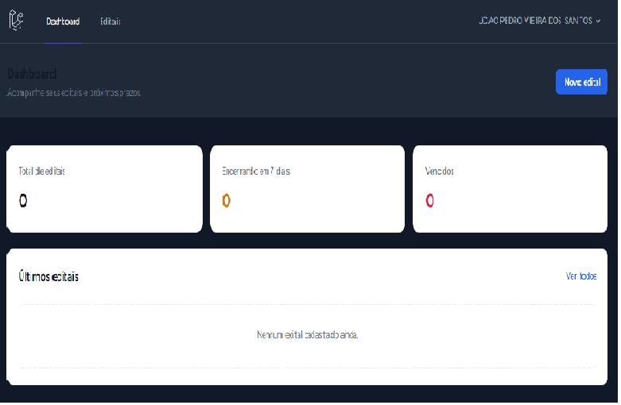
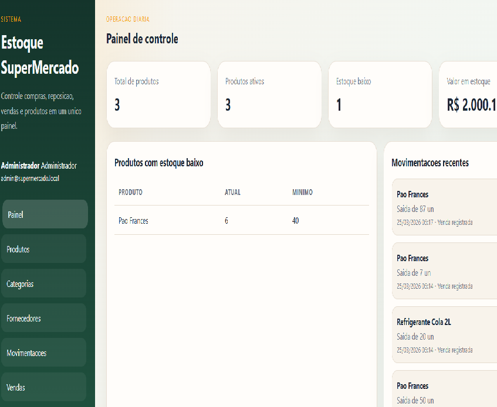
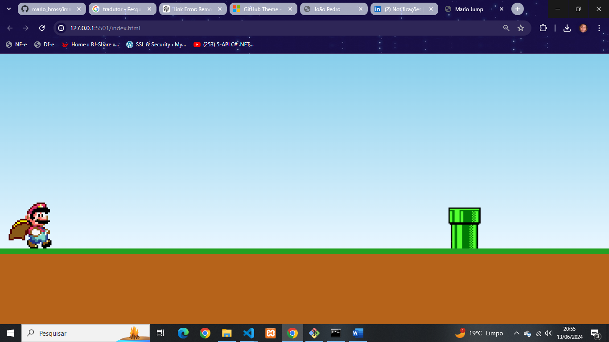
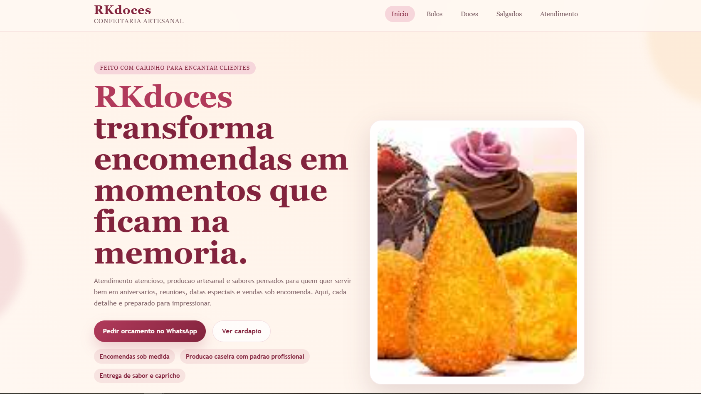
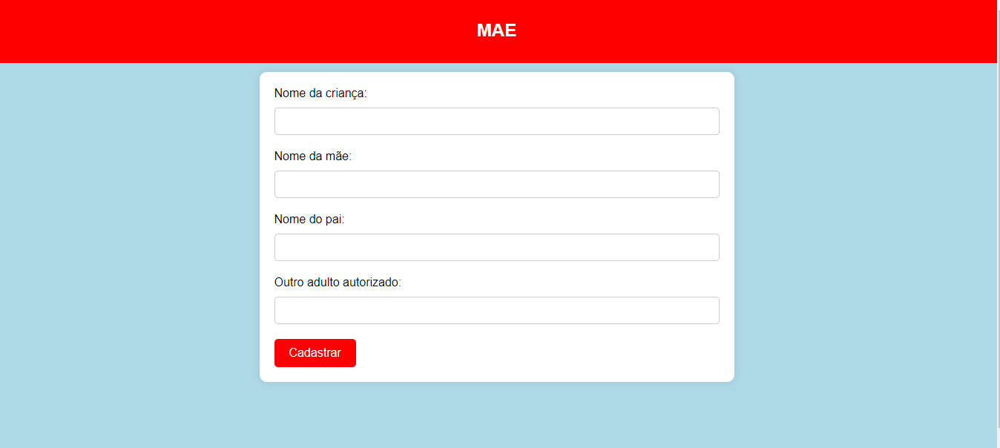

Solucoes corporativas
Experiencia em desenvolvimento e manutencao de add-ons, servicos e integracoes para ambientes empresariais.
Desenvolvimento interfaces profissionais, integracoes com sistemas corporativos e solucoes web focadas em performance, clareza e resultado de negocio.
Experiencia em desenvolvimento e manutencao de add-ons, servicos e integracoes para ambientes empresariais.
Construcao de interfaces, regras de negocio e APIs para produtos internos, freelance e demonstracoes publicas.
Vivencia com treinamento, orientacao tecnica, atendimento e acompanhamento de entregas com foco em qualidade.
Uma selecao de trabalhos que mostram minha experiencia com front-end, integracoes e produtos web.

Aplicacao para gerenciamento de editais com dashboard, acompanhamento de prazos e organizacao centralizada das oportunidades em um fluxo claro e objetivo.

Sistema voltado para controle e organizacao de estoque, com interface objetiva para apoiar operacoes de cadastro, consulta e acompanhamento de produtos.

Projeto interativo focado em dinamica visual, manipulacao do DOM e comportamento do usuario em tempo real.

Site institucional com foco comercial, apresentacao de produtos e experiencia digital mais atrativa para pequenos negocios do ramo de doces.

Formulario responsivo para cadastro de criancas, com foco em clareza de preenchimento e experiencia simples para o usuario final.
Sou desenvolvedor com experiencia em manutencao e evolucao de sistemas, criacao de APIs, servicos de integracao e desenvolvimento de interfaces para produtos web.
Atuei com .NET Framework, C#, SQL e SAP Business One, incluindo suporte a operacao, usabilidade do cliente SAP e desenvolvimento de recursos para rotinas internas.
Tambem participei de projetos com HTML, PHP, JavaScript, MySQL e Laravel, alem de atividades de treinamento tecnico e orientacao de aprendizes em programacao.
O curriculo segue disponivel na propria pagina para consulta rapida.
Se voce busca alguem comprometido com entrega, evolucao tecnica e colaboracao no time, vamos conversar.
joaopedrovieiradossantos326@gmail.com